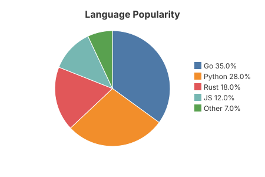
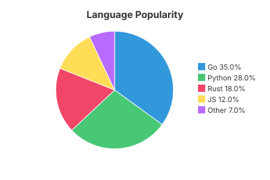

10 — Pie Chart
Proportional slices starting at 12 o'clock and sweeping clockwise, with a legend to the right listing each label and its percentage. Hovering a slice shows its value in a native tooltip.


The code
chart := gogal.NewPieChart(
gogal.WithTitle("Language Popularity"),
gogal.WithSize(450, 300),
gogal.WithColors("#3298dc", "#48c774", "#f14668", "#ffdd57", "#b86bff"),
)
chart.AddSlice("Go", 35)
chart.AddSlice("Python", 28)
chart.AddSlice("Rust", 18)
chart.AddSlice("JS", 12)
chart.AddSlice("Other", 7)
svg, _ := chart.RenderString()
AddSlice(label, value) adds one slice. Percentages are computed from the total of all positive values; slices with a zero or negative value are skipped.
WithColors(...) replaces the theme palette. Slices take colours in order and cycle if there are more slices than colours. Leave it out to use the theme's ten-colour palette.
Legend and tooltips. The legend reads "Go 35.0%". Each slice carries an SVG
<title>, so browsers show "Go: 35 (35.0%)" on hover with no JavaScript.
Running it
task example:10
Outputs SVG to stdout and serves at http://localhost:1349.
API reference
| Function | Purpose |
|---|---|
NewPieChart(opts...) |
Pie chart |
AddSlice(label, value) |
One slice; values are shares of the total |
WithColors(colours...) |
Palette override, in slice order |
WithLegend(false) |
Hide the legend |
Donut charts are not yet implemented — see the ROADMAP.